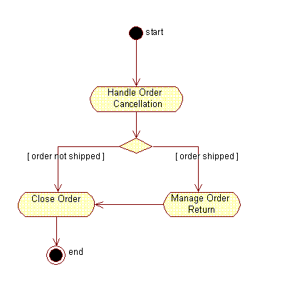
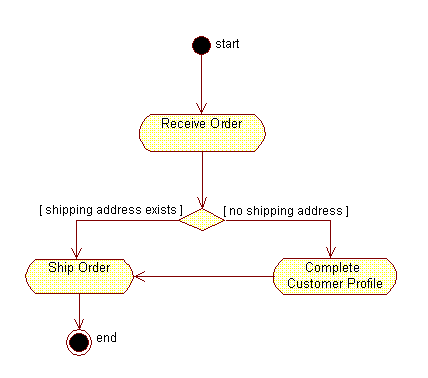
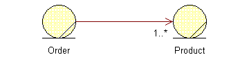
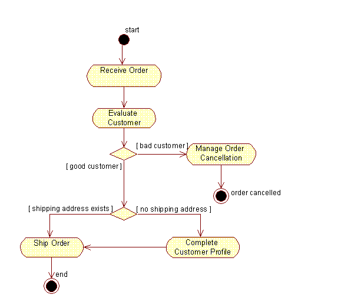
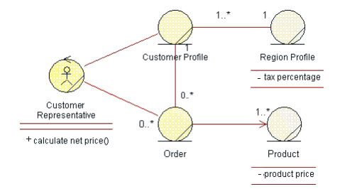

| Рекомендация: Business Rules |
 |
|
| Связанные элементы |
|---|
ExplanationBusiness rules are kinds of requirements on how the business, including its business tools, must operate. They can be laws and regulations imposed on the business but also express the chosen business architecture and style. There are two ways of capturing business rules:
Capturing Business RulesBusiness rules can be captured in both document and model form. If you want to obtain an overview of business rules in models, you can generate a Report: Business Rules Survey. A Business Rules Document is especially useful for business rules that have long descriptions, such as legislation. The disadvantage of document-based business rules is that it may still be necessary to trace the business rule to all parts of the model where it applies (if more than one). This can be overcome by opting for model-based business rules that can be captured directly in the models where they apply. However, this has the disadvantage of being "hidden away in the model," and it is more difficult to obtain an overview of all business rules that have some common characteristic (such as belonging to a particular category). Levels of FormalismBusiness rules need to be rigorously and formally expressed so that they can form a basis for automation. An alternative would be to use the Object Constraint Language (OCL) as specified in the Unified Modeling Language (UML) [RUM98]. Always consider who will be reading the business rules. Focusing on the reader helps ensure that the manner in which you capture the business rules (documents or models), your selected style, and level of formalism match the target audience. Business rules that cannot be understood by those who must read them are a waste of time on any project. Example: You may want to express a limit to the size of a team to less than ten members. With the OCL, you can state this business rule as an invariant: context Team inv: self.numberOfMembers <= 10 However, you must consider that this formal type of language may be difficult to interpret for many of your stakeholders, so a more natural language style might be preferable. You can define a set of reserved expressions that you use to define the rules. Those expressions could be the same as those defined in [ODL98]:
Example: In this less formal language, the example above reads: IT MUST ALWAYS HOLD THAT the number of team members is less or equal to 10. Categories of Business RulesRules can be classified in many ways, although it is common is to divide them between constraint rules and derivation rules. [ODL98] Both categories can be further subdivided in the following manner:
This classification of business rules is practical when explaining what business rules are, how to find them, and how to work with them. However, there is no need to think of them as fixed groupings to which you always need refer. Therefore, our template for the business rules artifact does not show this classification-in your project most likely there will be other groupings (by domain, by user, or by product group) that are much more valuable to show. For more information about classifying and applying business rules, see [ROS97]. How Business Rules Are Reflected in the ModelsA business rule affects how your models look. It can also affect how you sequence tasks in your activity diagram, and it may even affect what associations you have between your business entities. Some rules are not easy to straightforwardly translate to the way a diagram looks-they may need to reside in the descriptions of the model elements. Business rules in a UML diagram should be linked to the model element they affect. It is also useful to track business rules in the Requirements Attributes for traceability and reporting purposes. Stimulus and Response RulesThis kind of business rule affects the workflow of a business use case and can be traced to the business use case to which it applies. You might either show a conditional path or an alternative path through the workflow. If the actions involved are less significant, it can be sufficient to let the evaluation of the business rule be enclosed in an activity state. In the Business Analysis Model, a rule of this kind could, for example, affect how you describe the lifecycle a business entity, or it could be part of the description of an operation on a business worker. Examining the identified business events is a very useful source for defining these kinds of business rules. Usually a business event is identified because somebody or something is interested in the occurrence of the event. Ask the question, "What conditions or behavior applies once the event occurs?" Example: In an order management organization, you might find the following rule:
This business rule is reflected by showing two alternative paths in a workflow and specifically using a decision and guard condition on outgoing transitions.  The business rule in this case translates to an alternative path through the workflow. Operation Constraint RulesThis type of business rule often translates to preconditions and post-conditions of a workflow, or to a conditional or alternative path in a workflow. It can also be a performance goal or some other non-behavioral rule that should be traced to the business use cases to which it applies. Example: In an order management organization, you might find the following rule:
 The business rule translates to an alternative path in the workflow. Example: Here is another operation constraint rule:
This business rule would translate to a performance goal of a business use case. See the section on performance goal in Guideline: Business Use Case. Structure Constraint RulesThis type of business rule affects relations between instances of business entities. They are expressed by the existence of an association between two business entities, sometimes as a multiplicity on the association. Example: In an order management organization, you might find the following rule:
 This business rule translates to an association with the multiplicity of 1..*. Inference RulesInference rules often seem similar to stimulus and response, as well as to operation constraint or structure constraint types of rules. The difference is that there are a few steps that need to be thought through to arrive at the conclusion. The rule implies a method that needs to be reflected in an activity state of the workflow and eventually in an operation on a business worker or business entity. Example: You might set up the following rule to determine a customer's status:
 This business rule corresponds to an alternative path through the workflow, and the method prescribed will be part of the Evaluate Customer task. Computation RulesComputation rules are similar to inference rules. The difference is that the method is more formal and looks like an algorithm. As with inference rules, this method needs to be traced to an task in the workflow and, eventually, to an operation on a business worker or a business entity. Example: A computation rule can specify value computation:
Evaluating the net price could be part of the task Ship Order as you produce the bill sent with the order. In the Business Analysis Model, this rule translates to associations and operations.  The rule needs to be reflected as a method in the operation Calculate Net Price but also implies a need for relationships between classes in the model. |
© Copyright IBM Corp. 1987, 2006. Все права защищены.. |